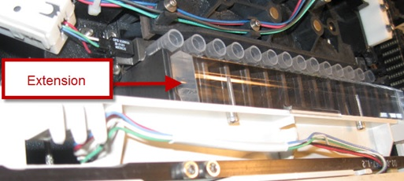
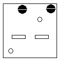
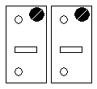
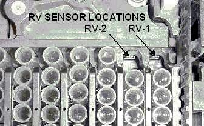

Adjusting RV Sensors
This procedure describes how to adjust RV sensors.
Pre-requisites:
Correct alignment of the shuttle and rake are prerequisites to the RV sensor adjustment.
Note: Refer to the
Aligning RV Shuttle and Rake procedure.
The P/N 8886 sensor PCB has the sensors mounted higher than the P/N 6596 PCB does. Because the sensors are higher, they can see the reflection of the rake when no RVs are present. The rake is more reflective than the RVs and can cause a false RV detection. Therefore, you must adjust the 8886 PCB using the rake as a target with no RVs.
Note:
- If an RV sensor is signaling the presence of an RV in positions 1 or 2, the rake does not advance to snug the RVs during initialization or in diagnostics.
- Residue on the face of the sensors can affect the voltage reading. Clean the sensor with a swab and DI water before adjusting the sensor.
- Vessels that are raising up when entering the sensor positions can affect the voltage values. An RV Loader Door assembly with an extension may correct the vessel positioning (Assembly PNC07158)

- Shield the sensors from intense direct light which can affect the voltage during adjustment.
- As each RV is ejected, it is pulled into the shuttle where RV sensor #1 confirms the presence of the RV. An RV sensor problem causes a clean-out error when the RV is not detected. The Device Failed At Index xxx In Motion Sequence wcsas.seq error is typically observed in this situation.
| Part Number: Common Name | Description |
|---|---|
| 8886A or 8886B: One-piece RV sensor | One PCB with two sensors (RV1 and RV2). Found in systems manufactured between August 2002 and February 2003, and in systems when Field Service used these sensors as repair parts. If symptoms indicate chronic problems with the RV sensors, then replace this type of sensor with the original type (Refer to MOD 6165).
 |
| 6596A: Original (and current) RV sensor | Two PCBs with two sensors, one PCB for each sensor (RV1 and RV2). Found in systems manufactured before August 2002 and after February 2003.
 Note:
For easier identification of the RV sensor version, the walking beam of the shuttle can be moved to the rear. Disable the motors and turn the slotted drive shaft on the shuttle. Return the shuttle to home, if you move the shuttle.
 |
| Shuttle RV Position | Condition | Test Point | Adjustment Pot | Voltage |
|---|---|---|---|---|
| 1 | No RV present | VS1 on Analytical Interface PCB | RS1 on Analytical Interface PCB | 1.15 to 1.3 V DC |
| 2 | No RV present | VS2 on Analytical Interface PCB | RS2 on Analytical Interface PCB | 1.15 to 1.3 V DC |
| 1 | RV present | VS1 on Analytical Interface PCB | Do Not Adjust | >3.9 V DC |
| 2 | RV present | VS2 on Analytical Interface PCB | Do Not Adjust | >3.9 V DC |